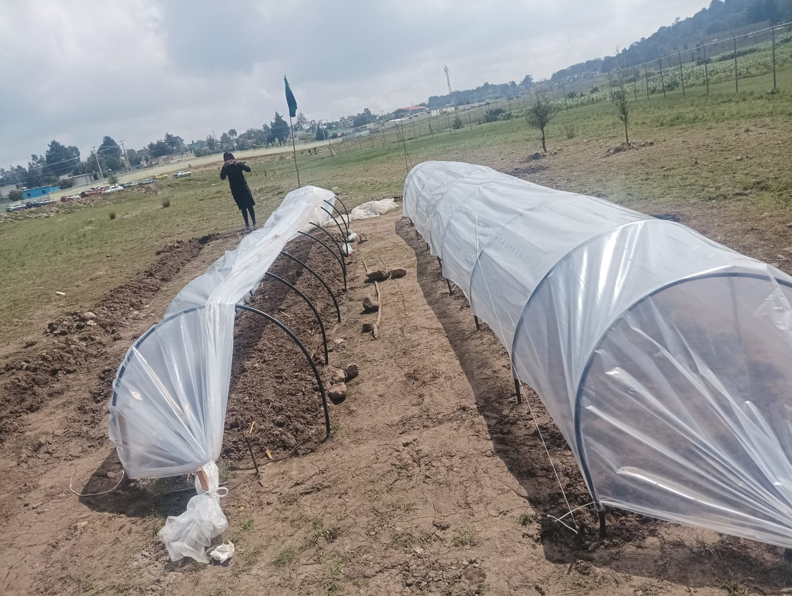

Proceso para hacer un microtunel con sistema de riego por aspercion
"1. Removemos la tierra donde iran las semillas del microtunel"
"2. Desasemos los terrones y quitamos raizes"
"3. Colocamos estiercol de animal"
"4. Empezamos a sembrar las semillas de las frutas o verduras"
 "5. Vamos tapando las semillas ya sembradas"
"5. Vamos tapando las semillas ya sembradas""6. Metemos ala tierra barilla aproximadamente de 30cm para que se pueda meter el sosporte del microtunel (Mangera)"
"7. Se meten arcos echos de mangera para darle la forma de un microtunel"
"8. Cortamos la manguera para añadir los aspersores "
"9. Vamos añidiendo aspersor por aspersor"
"10. Así deberían de ir quedando"
"11. Y repetir en toda la extructura del microtunel"
"12. Ya terminado de poner la manguera y los aspersores en toda la extructura"
"13. Consegimos una bombita para bombear agua"
 "14. Y conectamos la manguera ala bombita de agua"
"14. Y conectamos la manguera ala bombita de agua""15. Y metemos un extremo de manguera ala cubeta de agua"
"16. En el microtunel lo cerramos con maya y platico para túnel"
"17. Aquí ya cerrados con el sistema riego"
 "18. Y aquí ya finalizado el proyecto del microtunel con sistema de riego por aspersión"
"18. Y aquí ya finalizado el proyecto del microtunel con sistema de riego por aspersión"Datos de contacto